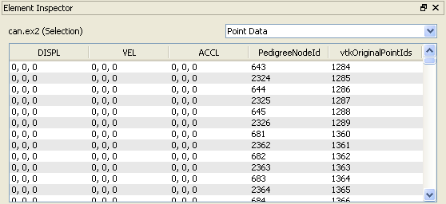

Using the Select Surface button on the toolbar, the user may click and drag in a view to select points and cells in a dataset. The Element Inspector displays (in a scrollable list) the point data, cell data, and/or field data associated with the selection. The name of each associated data attribute (array) is given along the top of the scrollable list, and one entry (either a scalar or vector value) per point, cell, field is listed per array.
In the upper left corner is a text label that indicates the dataset whose point, cell, or field data is being displayed. The text in parentheses after the name of the dataset indicates whether the information displayed is from a selection on a dataset (see image at top of page) or is the output of an Extract Selection filter (see description below). In the upper right corner is a drop-down menu for selecting whether to show Cell Data, Point Data, or Field Data.
If an Extract Selection filter is applied to the dataset on which a selection was performed, then when the Extract Selection filter is selected in the Pipeline Browser, the Element Inspector will show the fields associated with that selection, even if another selection is made on the original dataset.